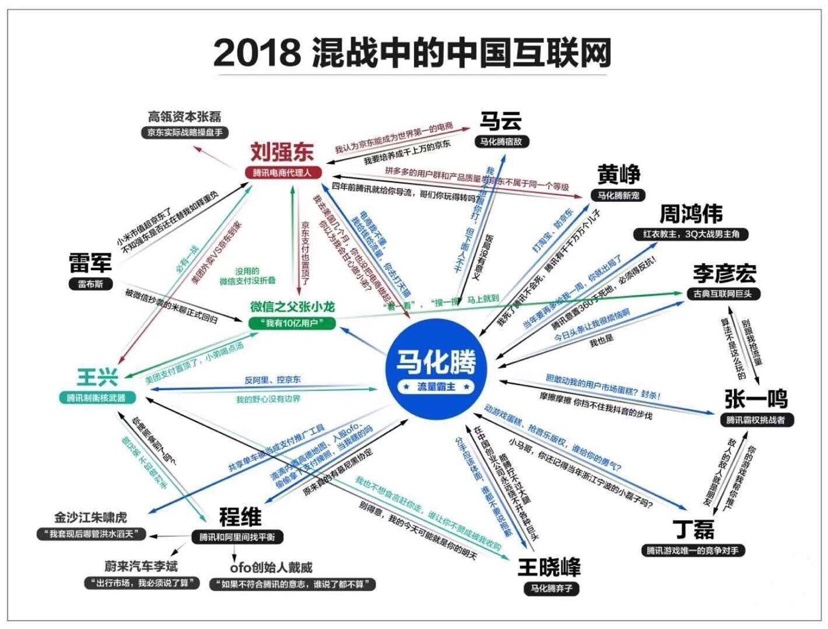
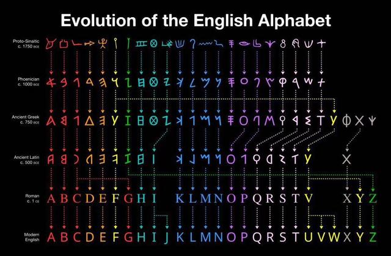
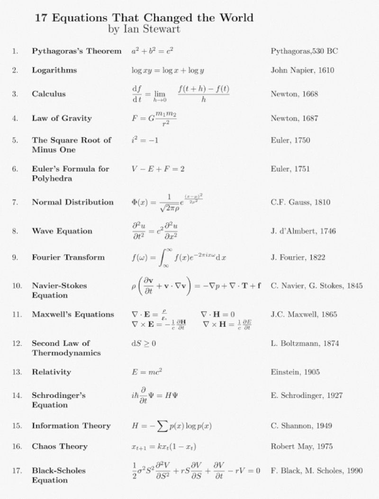

每周分享第 6 期
文章
博士后工作难找，欧美一些研究者探讨了背后的原因：读博要谨慎，做博士后更要慎重。
图片
2018 混战中的中国互联网

新闻
网秦彻底退出舞台
高中使用塞班系统时网秦还是挺流行的，时过境迁……
12 月 24 日晚，凌动智行（原名：网秦，NYSE:LKM）今日宣布，已接到纽约证券交易所的通知，其美国存托股（ADS）已被暂停交易。同时，纽约证券交易所监管部门的工作人员已决定对其 ADS 启动退市程序。
纽约证券交易所监管部门认为，根据《上市公司手册》802.01D 条之规定，鉴于凌动智行「异常低」的股价水平，认为其股票已不适合再继续交易。
网秦创立于 2005 年，2011 年 5 月在纽交所上市，成为中国第一家成功登陆纽交所的移动互联网企业。今年 1 月，网秦更名为「凌动智行」，旨在体现网秦将转型为智能汽车和智能出行服务公司。
今年 9 月以来，网秦出现了一系列动荡，包括公司创始人称被合伙人（现任董事长）绑架并监禁虐待 13 个月，以及公司资产被贱卖等。
每周分享第 4 期
案例
Visual Studio Code Error
如何解决 Visual Studio Code Error: Linter pylint is not installed（数据库引擎 Python 代码分析插件没有安装）？
如果不需要可以关掉，在用户设置里输入 python.linting.pylintEnabled": false 即可。
或以此命令 sudo -H pip install pylint 安装……
⚠️ 点击 install 安装失败的根源在于 pip 安装似乎无法依靠 socks 代理，只要将终端代理改为 https 的方式，一切都正常了！这也是本问题解决的最佳方式。方法来源
无效方法
如果使用 python3，则在用户设置中覆盖 “python.pythonPath”: “python3”然后点击弹框的 install，VS Code 会安装好 pylint 等一系列东西：安装还是失败。方法来源
macOS sudo 参数
-b：在后台执行指令。
-h：显示帮助。
-H：将 HOME 环境变量设为新身份的 HOME 环境变量。
-k：结束密码的有效期限，也就是下次再执行 sudo 时便需要输入密码。
-l：列出目前用户可执行与无法执行的指令。
-p：改变询问密码的提示符号。
-s：执行指定的 shell。
-v：延长密码有效期限 5 分钟。
-V：显示版本信息。
-S：从标准输入流替代终端来获取密码
-u <用户>：以指定的用户作为新的身份。若不加上此参数，则预设以 root 作为新的身份。
每周分享第 3 期
新闻
Google 删除不作恶口号
2000 年以来，口号 Don’t be evil 一直是 Google 行为准则之一，2015 年 Google 重组成立 Alphabet 母公司时，该口号被修改为 Do the right thing，但前者依旧是行为准则之一。但在四月底或五月初 Google 已经悄悄删除该口号，不过仍然保留了这句话：
And remember... don’t be evil, and if you see something that you think isn’t right - speak up!
疑问
怎样确定作息时间
陆奇离职微软背后：伤势真的无法工作了 一文中表示：从雅虎到百度，陆奇一直保持凌晨 4 点起床，5-6 点赶到办公室工作的生活习惯，平均每天工作超过 15 个小时。在美国，与陆奇同样清晨早起工作，一天工作时间超过 12 个小时的企业高管不乏其人。苹果 CEO 库克每天 4:30 起床，Twitter CEO 杰克·多西每天 5 点起床，通用电气 CEO 伊梅尔特每天 5:30 起床，乔布斯每天 6 点起床，巴菲特每天 6:30 起床。
可是，并没有检索到文章表明这些人何时睡眠。我想，对自己来讲，22 点到 23 点之间睡觉，6:30 左右起床比较好。
中英文排版难点
Word 有自动调整中西文字体间隔的功能，但并不会调整符号（如 %）与中文字体的间隔。那么「50%后面接中文」时需要加空格么，似乎「50% 后面接中文」时加空格更好看一些。所以 Word 中这种位置手动添加空格么？
图片
- 英文字母进化时间轴

- 改变世界的 17 个数学公式

了解自 阮一峰，转载自 Business Insider
每周分享第 2 期
编程
初学者可以考虑选择 Python
我一直都想掌握一门编程语言，因为我感到如果未来不了解编程语言，会增加生存难度…… IEEE 发布 2017 年编程语言排行榜：Python 高居首位，PHP 第八 也说明了 Python 的流行和重要性。前 10 大编程语言你会几种 也认为初学者使用 Python 是不错的选择。廖雪峰教程也大力夸赞 Python，所以如果没有特别目的，完全可以考虑学习 Python 这门语言，它功能强大，且相较之下易掌握。
每周分享第 1 期
疑问
Markdown 为何两次回车才能换行？
- 在写 MD 文件时通常首行不会空格，在切换下一个自然段时，如果仅仅一个回车就换行，即产生
<br>标签，那么相邻自然段之间就没有足够的空白，会使文章难以阅读； - 如果一个回车就换行，产生
<p>标签，那么在列表换行和代码内部换行时，将会产生额外的空白，会使文章难以阅读；请注意，<br>标签只是开始新的一行，浏览器解析时相邻自然段中行间距通常较小，而当浏览器遇到<p>标签时，通常会在相邻的段落之间插入一些垂直的间距； - 如果确实需要
<br>标签的话，在需要处键入两个以上的空格后回车。 - ⚠️ 如果是单回车产生
<br>，双回车产生<p>呢？这显然更加符合我的想法～ 但目前一些编辑器可以设置回车转换为<br>标签，也即单回车产生一个<br>，双回车产生俩<br>标签，这对浏览器友好么？
<br> 标签是空标签，意味着它没有结束标签，因此 <br></br> 的写法是错误的；
但在 XHTML 中，要求空标签也需结束标签，且把结束标签放在开始标签中，也就是 <br />。
Copyright © 2024